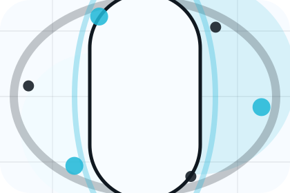
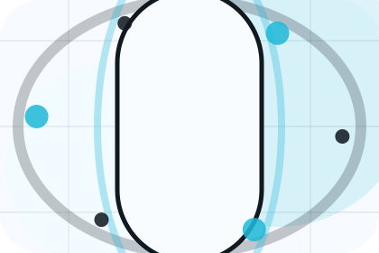
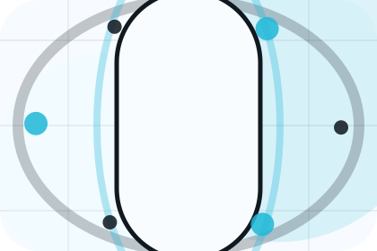

Pressure
Symptoms names the real friction visitors bring to the home route, so the page feels relevant before any claim is made.
Healthcare
Scan-first health check journey for fear reduction and care confidence.

Home / 02
Need frames the pressure behind the visit, then connects it to a practical path visitors can recognise and act on.
The copy avoids blame and panic. It shows the common friction, the practical consequence, and the calmer route Aster uses to move people forward.
Open ClinicNeed names the real friction visitors bring to the home route, so the page feels relevant before any claim is made.
The copy connects that friction to practical risk, delay, confusion, or missed opportunity without exaggerating it.
The final cue moves visitors toward a clearer route instead of leaving them with the problem alone.
Home / 03
Symptoms frames the pressure behind the visit, then connects it to a practical path visitors can recognise and act on.
The copy avoids blame and panic. It shows the common friction, the practical consequence, and the calmer route Aster uses to move people forward.
Open CareSymptoms names the real friction visitors bring to the home route, so the page feels relevant before any claim is made.
The copy connects that friction to practical risk, delay, confusion, or missed opportunity without exaggerating it.
The final cue moves visitors toward a clearer route instead of leaving them with the problem alone.
Home / 04
Promise defines the better state Aster is built to create, with enough detail to make the promise believable.
A scan-first care journey with minimalist copy, body-data panels, instant-results proof, and a direct appointment CTA. The section grounds that direction in concrete benefits, visible tradeoffs, and a next route visitors can use when the promise feels relevant.
Open Treatments
Promise defines what becomes clearer, easier, or safer when Aster is the chosen route.
Home / 05
Services explains the practical scope, best-fit situations, and expected outcome so healthcare visitors can compare options without decoding jargon.
The section keeps the offer concrete: what is included, who it is best for, what decision it supports, and which linked route gives the deeper detail.
Open TreatmentsWho should use services and when it belongs in the home journey.
The practical benefit visitors should expect after choosing this route.

Where to compare details, pricing, support, or contact options before committing.
Body scan split hero
Select the closest route and Aster keeps the next step, proof, and follow-up expectation aligned with fear reduction and care confidence.
Home / 07
Evidence gives the proof layer for home: standards, evidence, and reassurance that make the next decision feel grounded.
Instead of relying on vague claims, Aster presents visible standards, process cues, and proof artifacts that help healthcare visitors judge fit.
Open OutcomesVisible proof that helps visitors believe the claims behind evidence.
The quality, safety, or operating expectation this section makes explicit.
What becomes clearer before someone decides whether to book an appointment.
Home / 09
Reassurance adds care context to the home route, using the scan-first health check journey structure to support fear reduction and care confidence before visitors choose a next step.
Aster uses rounded diagnostic data cards and focused copy to make the decision easier to scan, aligning the section with fear reduction and care confidence rather than filling space.
Open GuidesReassurance gives the page a specific angle instead of repeating the navigation label.
The rounded diagnostic data cards show what to compare, what to avoid, and what matters most for healthcare, medical services & patient care visitors.

The final cue points to a useful internal route so the section keeps the journey moving.
Home / 10
Aster closes the home route with a clear action, a quick reminder of the value, and a low-friction way to book an appointment.
Visitors who are ready can use the primary action. Visitors who are still comparing can scan the section links, proof, and support routes before they book an appointment.
Book AppointmentThe final block keeps the choice simple: act now, compare one more proof route, or send enough detail for a focused response.
Book Appointmentfear reduction and care confidence
A scan-first care journey with minimalist copy, body-data panels, instant-results proof, and a direct appointment CTA. Home ends with a direct path to book an appointment, plus enough context for visitors who still need to compare.
 Book Appointment
Book Appointment